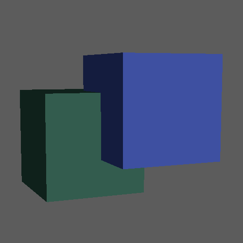
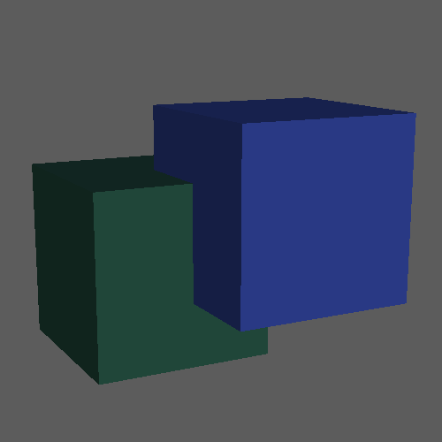
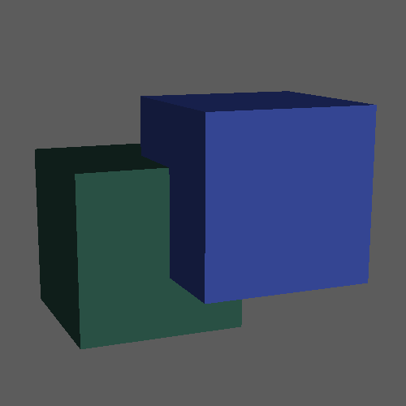
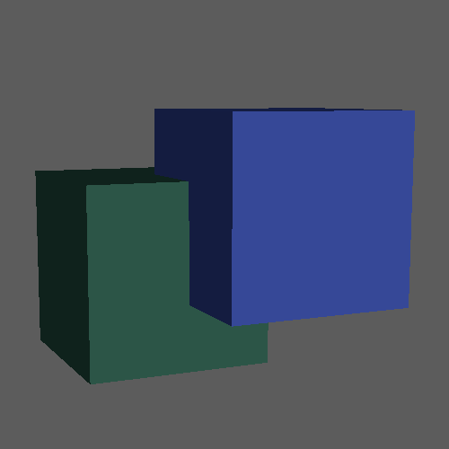
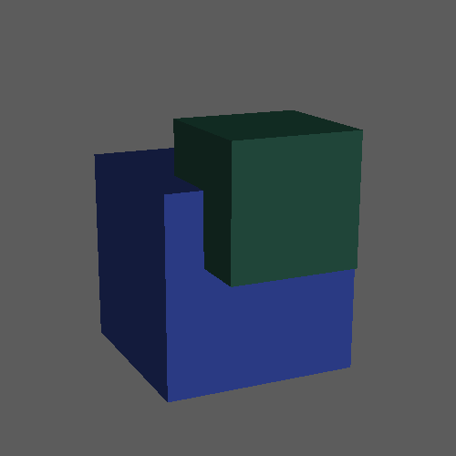
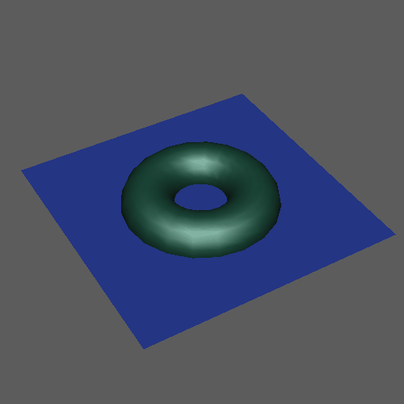
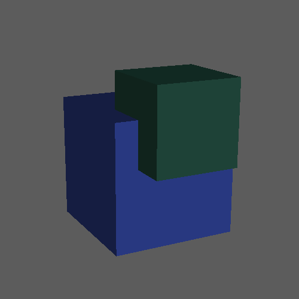

若要使用布尔运算，请执行下列操作之一：
- 选择“网格 > 布尔”(Mesh > Booleans)，然后选择布尔运算。
- 在“多边形建模”(Poly Modeling)工具架中的
 上单击鼠标右键，然后选择一种布尔运算。
上单击鼠标右键，然后选择一种布尔运算。
- 在“建模工具包”(Modeling Toolkit)中的
 上单击鼠标右键，然后选择一种布尔运算。
上单击鼠标右键，然后选择一种布尔运算。
注： 默认情况下，单击“多边形建模”(Poly Modeling)工具架或“建模工具包”(Modeling Toolkit)中的按钮将执行“差集(A-B)”(Difference (A-B))运算。
可以使用以下布尔运算创建新的复杂形状。
- 并集
- 将对象熔合在一起。

- 差集(A-B)(Difference (A-B))
- 从第一个选定对象 (A) 中减去第二个选定对象 (B)。

- 差集(B-A)(Difference (B-A))
- 从第二个选定对象 (B) 中减去第一个选定对象 (A)。

- 交集
- 删除不在其他输入对象内部的任何曲面，从而熔合其余的内部曲面。

- 切片(Slice)
- 在输入对象相交处拆分第一个选定对象上的面，从而创建单独的壳。

- 打洞(Hole Punch)
- 移除第一个选定对象中位于任何其他输入对象内部的任何曲面，从而留下一个开放网格。

- 剪辑镜头出点(Cut Out)
- 移除第一个选定对象中位于任何其他输入对象外部的任何曲面，从而留下一个开放网格。
- 分割边(Split Edges)
- 在第一个选定网格上沿输入对象的交点插入新边。
